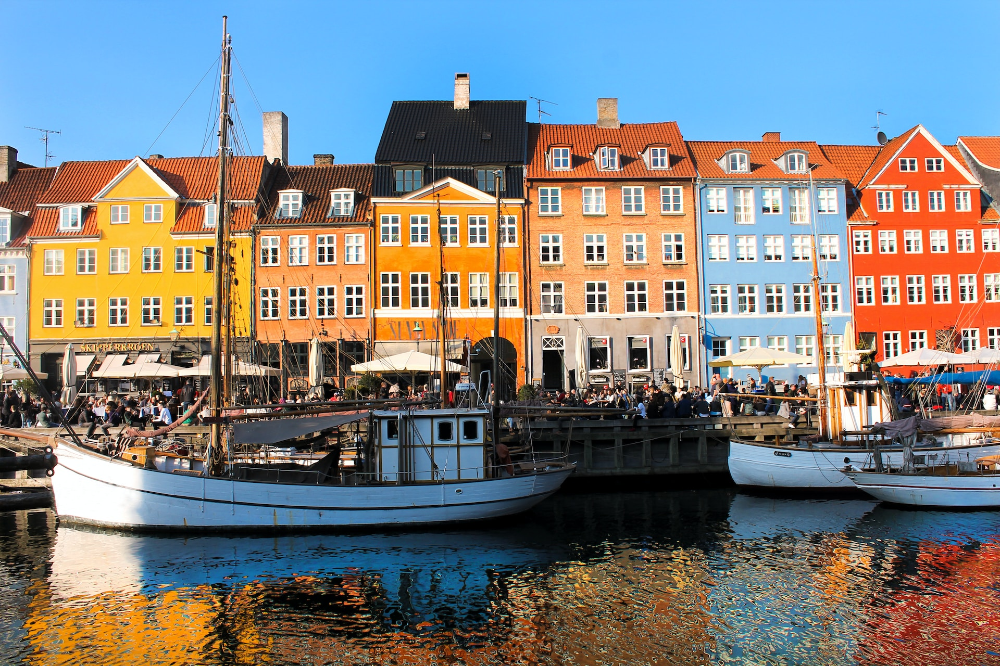
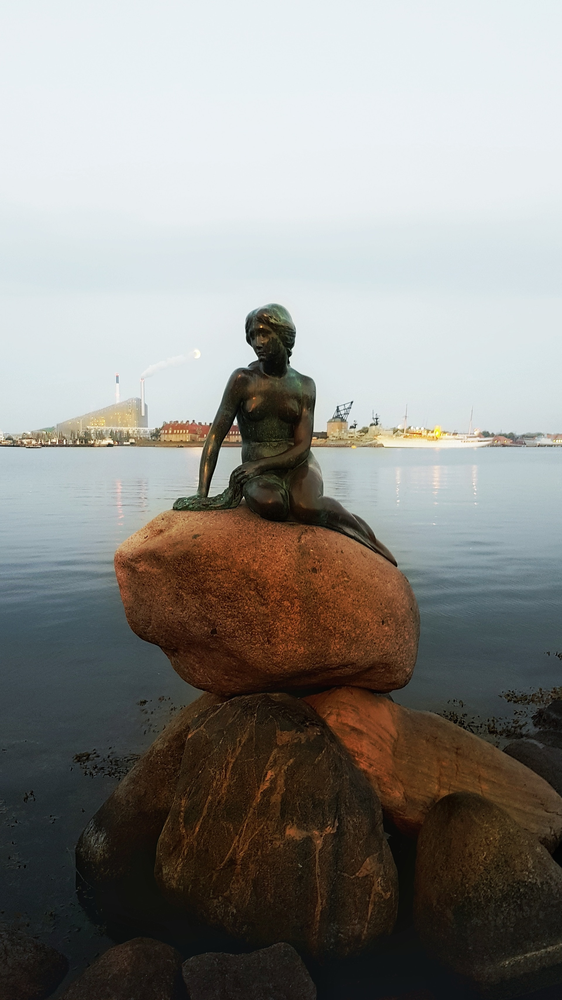
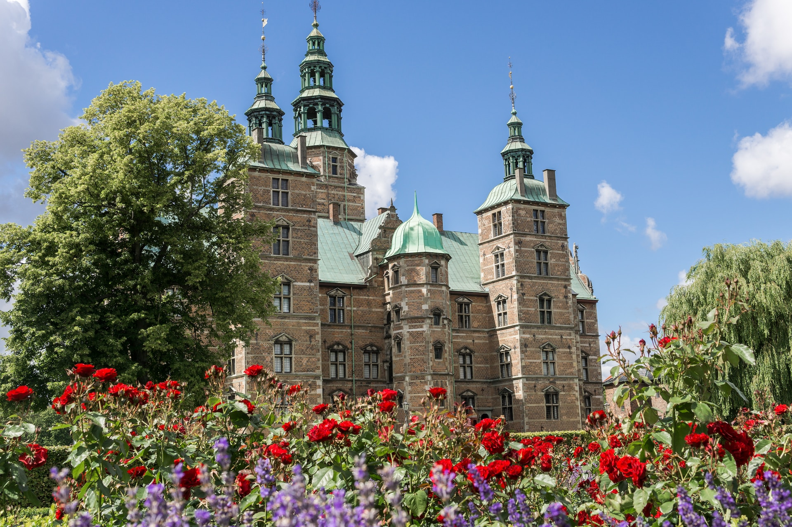
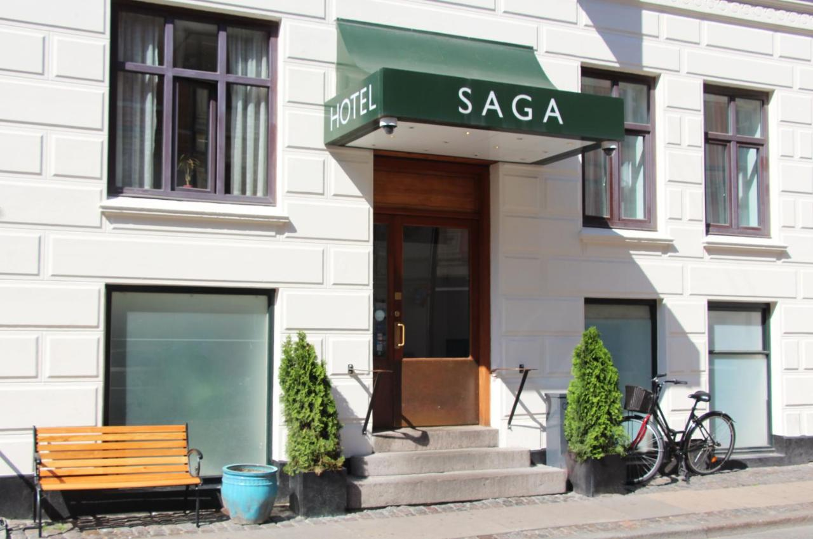
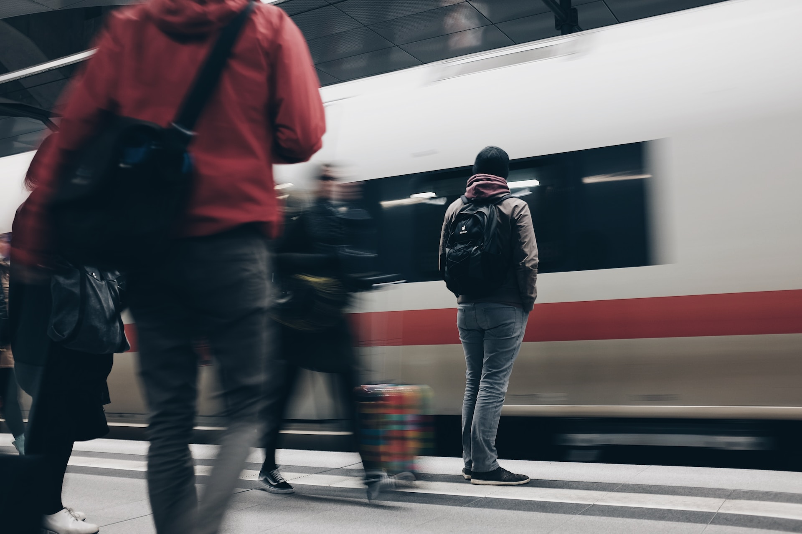

København
Velkommen til København!
Welkom in København, de levendige hoofdstad van Denemarken en een stad vol Scandinavische charme en cultuur.Gelegen aan de kust en verrijkt met historische bezienswaardigheden en moderne architectuur, is København een bestemming die je zal betoveren.
Verken de kleurrijke geplaveide straten van het iconische Nyhavn, waar historische gebouwen, restaurants en levendige cafés langs de kanalen staan.
Bezoek het wereldberoemde Tivoli en geniet van attracties, concerten en prachtige tuinen midden in de stad.
Ervaar ook de koninklijke sfeer in Christiansborg Slot, waar je de koninklijke zalen kunt verkennen en kunt genieten van een panoramisch uitzicht over de stad vanaf de toren.
Maak een ontspannen wandeling over de schilderachtige Assistens Kirkegård en bezoek de rustplaatsen van beroemde schrijvers en kunstenaars.
København staat ook bekend om zijn gastronomische scene, met Michelin-restaurants, moderne voedselmarkten en gezellige cafés.
Proef smaakvolle Deense gerechten zoals smørrebrød en fiskefrikadeller, vergezeld van heerlijk lokaal bier of snaps.
Met zijn vriendelijke sfeer, fietsvriendelijke straten en geweldige culturele aanbod is København een stad die elke bezoeker zal betoveren.
De must-sees van København
Nyhavn
Verken de kleurrijke grachten van København, waar historische gebouwen en levendige restaurants een pittoreske omgeving creëren.
Geniet van de gezellige terrasjes langs het water en ervaar de charme van deze iconische buurt.
Verken de kleurrijke grachten van København, waar historische gebouwen en levendige restaurants een pittoreske omgeving creëren.
Geniet van de gezellige terrasjes langs het water en ervaar de charme van deze iconische buurt.


Tivoli
Laat je betoveren door de magie van Tivoli, een wereldberoemd pretpark in het hart van de stad.
Ontdek spannende attracties, geniet van adembenemende concerten en wandel door prachtige tuinen vol bloemen en verlichting.
Laat je betoveren door de magie van Tivoli, een wereldberoemd pretpark in het hart van de stad.
Ontdek spannende attracties, geniet van adembenemende concerten en wandel door prachtige tuinen vol bloemen en verlichting.
Rosenborg Slot
Bewonder de prachtige interieurs, waaronder de weelderige koninklijke vertrekken en de schatkamer met de indrukwekkende Deense kroonjuwelen.
Een must-visit voor liefhebbers van geschiedenis en architectuur.
Bewonder de prachtige interieurs, waaronder de weelderige koninklijke vertrekken en de schatkamer met de indrukwekkende Deense kroonjuwelen.
Een must-visit voor liefhebbers van geschiedenis en architectuur.

Accommodatie
Tijdens je verblijf logeer je in het Go Hotel Saga.
Go Hotel Saga biedt accommodatie in het bruisende centrum van Kopenhagen.
Het bevindt zich in de trendy wijk Vesterbro, op 150 meter van het centraal station van Kopenhagen en wordt beheerd door een familie.
De kamers zijn voorzien van een flatscreen-tv en gratis WiFi.
Go Hotel Saga biedt accommodatie in het bruisende centrum van Kopenhagen.
Het bevindt zich in de trendy wijk Vesterbro, op 150 meter van het centraal station van Kopenhagen en wordt beheerd door een familie.
De kamers zijn voorzien van een flatscreen-tv en gratis WiFi.

De treinreis

København is in één dag bereikbaar per trein met comfortabele ICE- en IC-treinen.
Onderweg hebt u twee overstappen: in Köln en Hamburg.
Voor de heenreis hebt u de volgende reisopties:
Voor de terugreis hebt u de volgende reisopties:
Onderweg hebt u twee overstappen: in Köln en Hamburg.
Voor de heenreis hebt u de volgende reisopties:
- Vertrek in Brussel-Zuid om 06:23, aankomst in København om 20:03.
- Vertrek in Brussel-Zuid om 08:23, aankomst in København om 21:34.
Voor de terugreis hebt u de volgende reisopties:
- Vertrek in København om 07:26, aankomst in Brussel-Zuid om 19:35.
- Vertrek in København om 08:56, aankomst in Brussel-Zuid om 21:35.
Prijzen
Deze reis is beschikbaar vanaf €500,- per persoon.Inbegrepen in de prijs zijn de heen- en terugreis, 3 overnachtingen ter plaatse inclusief ontbijt en BTW.
Op verzoek kan de reisduur steeds uitgebreid of ingekort worden.
Boek je reis via ons boekingsformulier en wij sturen je zo snel mogelijk een reisvoorstel.